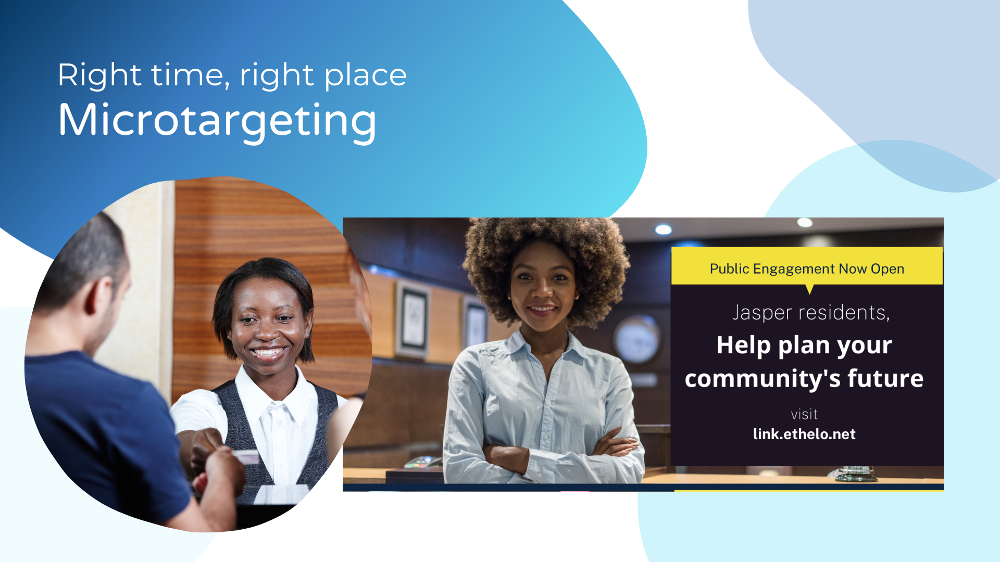

Conversation Architecture

When city planners struggle to hear genuine voices beyond the usual suspects, we become conversation architects. We design engagements where communities have their say, and their say becomes policy.
The Challenge
- Moving beyond "the usual suspects" in public consultations
- Making technical information accessible and engaging
- Turning town halls from shouting matches into productive dialogue
- Ensuring diverse voices are heard and valued
Our Approach
We transform dense reports into interactive tools where communities can explore options, test scenarios, and see the real-world impacts of different choices. Instead of lecturing people about what they should want, we give them the tools to discover what they actually need.
Our engagement designs focus on invitation over intimidation - creating spaces where people feel genuinely welcome to contribute, not just consulted for the sake of checking boxes.
What This Looks Like
- Interactive budget tools - Communities allocate resources across competing priorities
- Scenario planning workshops - "What if we tried this approach instead?"
- Neighborhood dinners - Policy conversations over shared meals
- Digital engagement platforms - Meeting people where they already are
Beyond Traditional Consultation

Traditional public consultations often fail because they're designed for governments, not communities. We flip the script.
Making Engagement Actually Engaging
- Meet people where they are - Farmer's markets, community centers, online spaces
- Make it social - Potlucks, thermal imaging parties, group discount programs
- Focus on solutions - "How might we..." instead of "Why can't you..."
- Show real impact - Clear feedback loops on how input shaped decisions
"The best public engagement feels less like a government meeting and more like neighbors figuring things out together."
Indigenous-Led Engagement

Supporting Indigenous sovereignty means ensuring Nations lead their own engagement processes. We provide technical support while communities maintain full control over their stories, data, and decisions.
Our Role
- Facilitating Nation-designed community planning processes
- Building tools that respect Indigenous data sovereignty
- Supporting community-to-community knowledge sharing
- Ensuring external stakeholders understand protocols and respect
Outcomes
Communities create their own climate action plans, energy transition strategies, and policy frameworks - with full ownership of the process and results. These become models for other Nations across Canada.
Digital Engagement Tools

The right technology can democratize complex decision-making. We build tools that make policy accessible and put real power in community hands.
Tools We've Built
- Climate action budgeting tools - Interactive dashboards for community planning
- Peer-to-peer organizing platforms - Neighbor-to-neighbor engagement
- Real-time feedback systems - Live polling and instant response collection
- Multilingual engagement platforms - Breaking down language barriers
"Technology should make complex decisions more accessible, not more complicated."
Capacity Building
Great engagement requires skilled facilitators. We train organizations to run their own meaningful consultations and build lasting relationships with their communities.
What We Teach
- Designing inclusive engagement processes
- Facilitating difficult conversations
- Using technology to enhance (not replace) human connection
- Building trust with skeptical communities
- Turning feedback into actionable policy
Long-term Impact
Organizations develop internal capacity to engage authentically with their communities, leading to better policies, stronger relationships, and more successful implementation of complex initiatives.